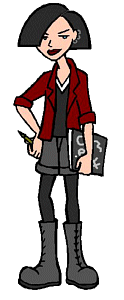

Full Name: Jane Lane
Current Age: 18
Current Vocation: Freshman at Boston Fine Arts College
Season One Age: 16
Season One Vocation: Sophomore at Lawndale High
Parents: Vincent and Amanda Lane
Siblings: Trent, Penny, Summer, and Wind
First Appearance: Esteemsters
Jane is Daria's best friend. They met during a self-esteem class at Lawndale High, which Jane had already taken six times (she could have easily passed the class, but having low self-esteem "made her feel special"). Like Daria, Jane is cynical, intelligent, and talented (she is a budding artist), but she is also a little more open to the world around her. She enjoys running, and once joined the Lawndale High track team... briefly.
Like any good artist, Jane constantly explores the passionate and emotional side of the world, which usually translates into exploring -- sometimes impulsively -- various romantic possiblities with boys ("Bobby Big-head" in "The Invitation" (#102), Evan in "See Jane Run" (#211), Tom Sloane in "Jane's Addition" (#313), and Nathan in "Life in the Past Lane" (#509)). Her emotional nature tends to get the better of her, unfortunately, and is part of the reason why her only long-term relationship (with Tom) ended -- disastrously -- in "Dye! Dye! My Darling" (#413). Her strained relationship with Daria (who began dating Tom) finally was resolved in "Is It Fall Yet?", and she now appears to be (mostly) comfortable with her best friend dating her ex-boyfriend... though, of course, she doesn't miss an opportunity to tease both of them about it.
Status at end of series:
Graduated from Lawndale High. Accepted into the midterm freshman class at Boston Fine Arts College, where she'll undoubtedly continue to drag Daria (who was accepted into the fresman class at nearby Raft College) into more adventures.
Daria on Jane:
Artiste extraordinaire and pizza fiend. Believes paint-by-number kits are inherently evil.
|